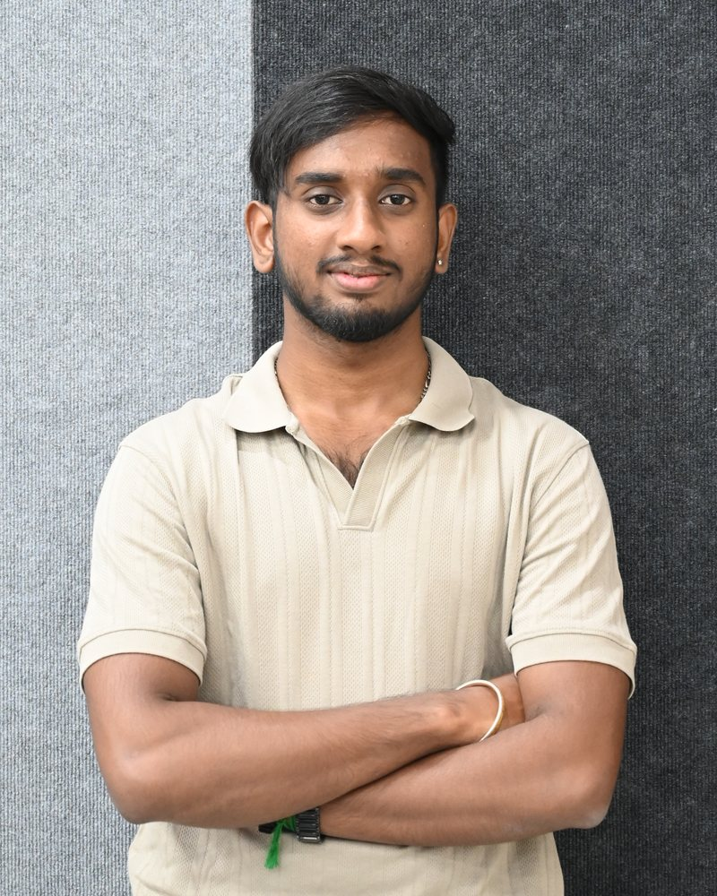

Adithya Ram S
I build sensing systems end to end: the firmware that reads the sensor, the digital logic that processes it, and the model that turns it into a decision.

Final-year B.Tech (Honours) student in Electronics and Communication Engineering at IIIT Sri City, working on embedded systems, FPGA design and edge AI.
Research
SKRAID: Skid Risk Assessment in Indian Driving Conditions
Honours research project, IIIT Sri City
A two-wheeler-mounted sensing rig and risk model that estimates skid risk from how the vehicle is moving and what the road looks like. I built the multithreaded acquisition pipeline on a Raspberry Pi 4, collected the dataset over about 31 riding sessions, and developed the Rskid model, which combines IMU, GPS, visual and environmental features.
- Platform
- Raspberry Pi 4 (8 GB)
- Sensors
- 9-DoF IMU, GNSS receiver, USB camera
- Dataset
- About 31 sessions on Indian roads
- Status
- Paper submitted to IEEE VTC2027-Spring, under review
Research
Low-cost chlorophyll fluorescence sensing
Photonics and Biosensors Lab, IIT Madras, Jun to Jul 2026
Built a low-cost active chlorophyll fluorescence spectroscopy system as a proxy for solar-induced fluorescence based plant health monitoring. Ran a comparative multi-stressor study with parallel controls and wrote it up as a conference-style paper draft.
Also proposed a Raspberry Pi NoIR camera spectrometer as an alternative to commercial instruments.
Research, in progress
Streaming lock-in accelerator on FPGA
A digital lock-in amplifier with adaptive bandwidth, framed as a parameterised streaming DSP accelerator for phase-sensitive detection. The study compares CORDIC, polynomial and lookup-table approaches to magnitude and phase extraction on a ZCU104 (Zynq UltraScale+).
Try it: find the signal
A 50 Hz tone of amplitude 0.50 is buried in noise. The lock-in multiplies the input by a reference and low-pass filters the result to recover it. This is a browser simulation of the technique, not output from the FPGA.
- Input SNR
- –
- Recovered
- –
- Error
- –
Projects
-
Siren detection accelerator
INT8 CNN accelerator for emergency-vehicle siren detection on a Xilinx Zynq-7020, built with Team Dual Core at the FPGA Hackathon 2026. Selected to the poster round.
Zynq-7020, quantised CNN, edge AI
-
IoT e-cycle telemetry
ESP32 firmware for GPS and IMU acquisition, vehicle-to-vehicle experiments over ESP-NOW, long-range telemetry over LoRa, and a live Firebase and Leaflet dashboard. Provisional patent filed.
ESP32, GPS, IMU, LoRa, ESP-NOW
-
Intelligent collision warning system
Zone-based threat detection on a Raspberry Pi 4 using MobileNetSSD to raise real-time collision-risk alerts.
Raspberry Pi 4, MobileNetSSD, computer vision
-
Smart street light with LoRa
Street light controller with phase-angle AC dimming, remote monitoring and adaptive dimming over LoRa telecommands. Later adopted in modified form on campus.
LoRa, AC dimming, power electronics
-
DAC quantisation analysis for quantum control
Monte Carlo circuit-level DAC simulations combined with Qiskit and analytical fidelity modelling to study how quantisation error propagates into control waveforms.
LTspice, Qiskit, Python
-
UrbanSound8K classification
Led the data loading and augmentation work, built the CNN baseline, and compared classical models (SVM, KNN) against MobileNetV2 transfer learning.
Audio ML, CNN, data pipeline
Experience
-
Jun to Jul 2026
Research intern, Photonics and Biosensors Lab
Indian Institute of Technology Madras
Worked under Dr. Shivananju B.N. on optical sensing; built and characterised the chlorophyll fluorescence system.
-
Jul to Aug 2025
Research intern, Smart Transportation Lab
IIIT Sri City
Wrote ESP32 firmware for IMU (I2C) and GPS (UART) acquisition, built the telemetry pipeline into Firebase, and made the Leaflet dashboard for the IoT e-cycle. Provisional patent filed on the platform.
-
May to Jul 2025
Software intern, Hardware Platform Solutions
Celestica India Pvt. Ltd., Chennai
Built Python test automation and orchestration tooling over SSH and REST APIs, including a rerun framework that cut manual re-triggering of test suites.
Education
-
2023 to 2027
B.Tech (Honours), Electronics and Communication Engineering
Indian Institute of Information Technology Sri City
CGPA 8.43 / 10
-
2021 to 2023
Higher secondary (Class 12)
Narayana Junior College, Chennai
93%
Leadership
-
Aug 2025 to present
Club lead, NexSync Smart Mobility Club
Lead the club's smart mobility and vehicle-to-vehicle communication projects.
-
Sep 2024 to Sep 2025
Co-lead, Marketing Team
Ran marketing for institute-level events. Certificate ref. IIITS/AY2425/Certificate/Marketing Team/2.
Skills
- Languages
- C, C++, Embedded C, Python, Verilog, SystemVerilog, MATLAB
- Digital design
- Xilinx Vivado, Cadence Genus, Innovus and Virtuoso
- Microcontrollers and SBCs
- ESP32, ESP8266, PIC, 8051, Raspberry Pi, STM32 (familiar)
- Interfaces
- GPIO, I2C, SPI, UART, PWM, ADC, CAN (familiar)
- Wireless
- LoRa, ESP-NOW, BLE, Wi-Fi
- Simulation
- LTspice, MATLAB, Qiskit (system level)
- Bench and tooling
- Logic analyser, oscilloscope, Git, Linux, PlatformIO
- Certifications
- Verilog HDL: VLSI Masterclass (Udemy); IoT and Autonomous Systems (IEEE ITSS, IIIT Sri City); ESP32 IoT Internship (COGTIS Technologies)
Contact
Open to research collaborations and internships in embedded systems, FPGA and edge AI.
Adithya Ram S, Sri City and Chennai, India.